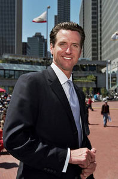

Meet Gavin

Gavin Newsom was elected as the 49th Lieutenant Governor of the State of California on November 2, 2010. His top priorities are economic development and job creation, improving access to higher education, and bolstering California's environmental leadership.
Newsom came from a successful background in both the private sector, starting 15 small businesses and creating more than 1,000 jobs, and local government, having served as a Supervisor, and later, Mayor of the City and County of San Francisco.
LIEUTENANT GOVERNOR
California is a place of limitless economic opportunity, but that doesn’t mean our work is done.
As Lieutenant Governor, Newsom is working with local leaders and California businesses to cement our status as one of the 10 largest economies in the world. California is a place where high tech comes to take flight, where our creative workforce entertains and connects the world, and where our agricultural products feed America.
Lt. Gov. Newsom is the chief architect of California’s Economic Growth and Competitiveness Agenda, a blueprint for continued economic growth. It charts a path for better infrastructure, a focus on manufacturing, building up exports and other pillars of California’s success.
Doing so requires a land use policy that balances short-term gain with long-term preservation. As a member of the State Lands Commission, Gavin Newsom is working towards exactly that, so economic growth is balanced with smart, future-oriented development of our local resources.
Building an economy that lifts everyone up means building a workforce that’s prepared to step into the jobs of tomorrow, a mission Gavin Newsom works toward as a member of the State Job Training Coordinating Council. It also means making education accessible and affordable to all, which is a key priority for his service as a Regent of the University of California system and a Trustee of the California State University system. In 2012, he was the only UC Regent to vote against a tuition hike.
As the author of Citizenville, Lt. Gov. Newsom is leading the way toward a state government that is more open, transparent, and accessible to all Californians.
SUPERVISOR AND MAYOR
In 1996, Newsom was appointed by San Francisco Mayor Willie Brown to the City's Parking and Traffic Commission and was soon elected its President. In 1997, Brown appointed him to the City's Board of Supervisors. Voters elected Newsom to the Board in 1998 and re-elected him in 2000 and 2002.
As a Supervisor, Newsom focused on combating homelessness. His initiative, Care Not Cash, provided homeless individuals services instead of welfare. Although the city's political establishment opposed Care Not Cash, the voters approved it in November, 2002.
In 2003, after a fiercely-contested race, Newsom was elected the youngest Mayor in San Francisco in more than a century.
After only 36 days as mayor, Newsom gained worldwide attention when he granted marriage licenses to same-sex couples. This bold move set the tone for Newsom's first term. Under his energetic leadership, the economy grew and jobs were created. The City became a center for biotech and clean tech. He initiated a plan to bring universal health care to all of the City's uninsured residents. And Newsom aggressively pursued local solutions to global climate change.
In 2007, Newsom was re-elected with more than 73% of the vote. He built upon the successes of his first term, launching new environmental initiatives and a comprehensive strategy to transform one of the City's most troubled neighborhoods into a life sciences, digital media, and clean tech center. More than 80% of the previously uninsured are now covered by City's first-of-its-kind universal health care program. The City enjoys one of the highest minimum wages in America, universal paid family leave and universal child care. San Francisco's public school district is the highest performing urban school district in the state.
Newsom also balanced seven consecutive budgets on time during national economic instability without laying off a single teacher, police officer, or firefighter.
Newsom's commitment to combating homelessness never waned. As Mayor, he moved more than 10,000 homeless individuals off the street, and his volunteer initiative, Project Homeless Connect -- now imitated in more than 130 cities -- attracted more than 20,000 San Franciscans who give their time to help the homeless.
PERSONAL
Newsom is married to Jennifer Siebel Newsom. They reside in Marin County with their three children Montana, Hunter and Brooklynn.
The son of William and Tessa Newsom, he grew up in the San Francisco Bay Area. He attended Santa Clara University on a partial baseball scholarship, graduating in 1989 with a B.A. in political science.
After college, Newsom sold orthotics and worked as an assistant at a real estate firm. In 1991, Newsom recruited investors and founded PlumpJack, a wine shop, which he grew into a thriving enterprise of 15 businesses including wineries, restaurants, and hotels.